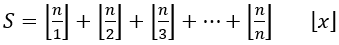

Hãy viết chương trình tính tổng sau đây với n là số nguyên dương:
 là số nguyên lớn nhất mà không lớn hơn x
Dữ liệu nhập:
Là số nguyên n (1 ≤ n ≤ 1012)
Dữ liệu xuất:
Là tổng S của biểu thức trên. Vì S có thể rất lớn nên chỉ cần in ra 6 chữ số cuối (S mod 106)